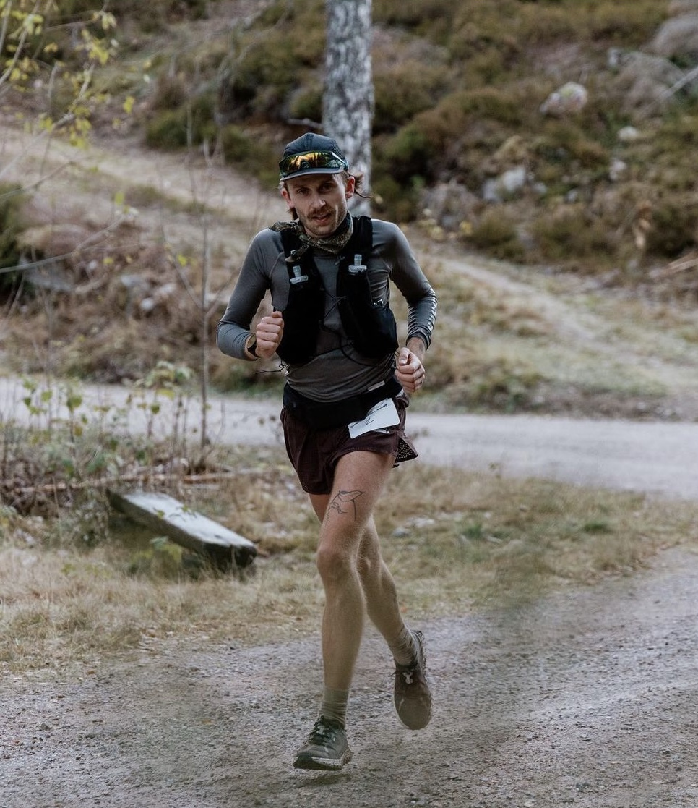
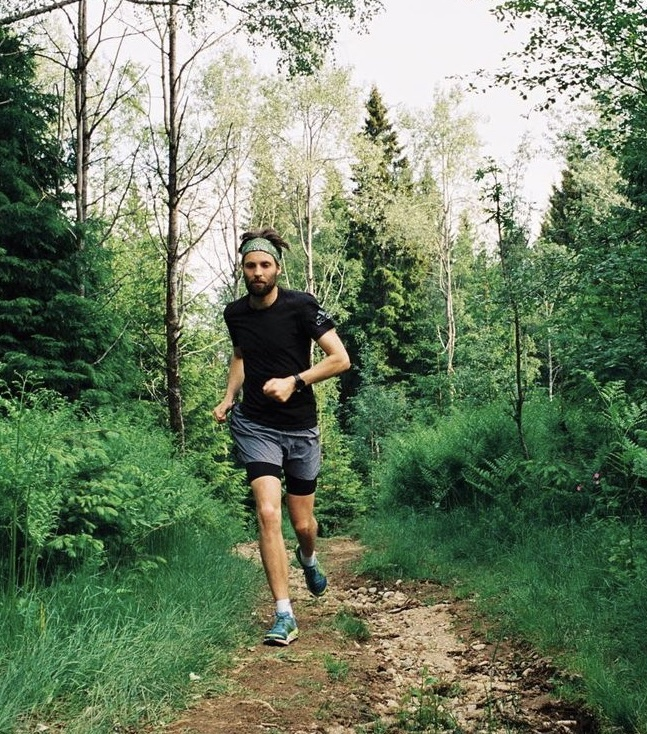
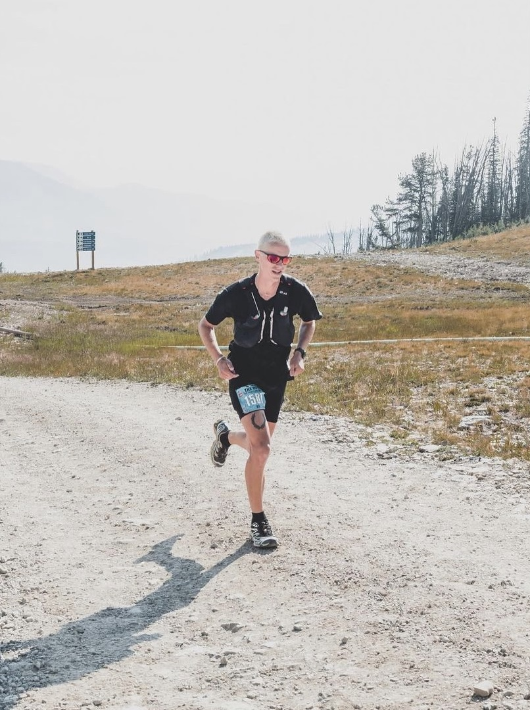
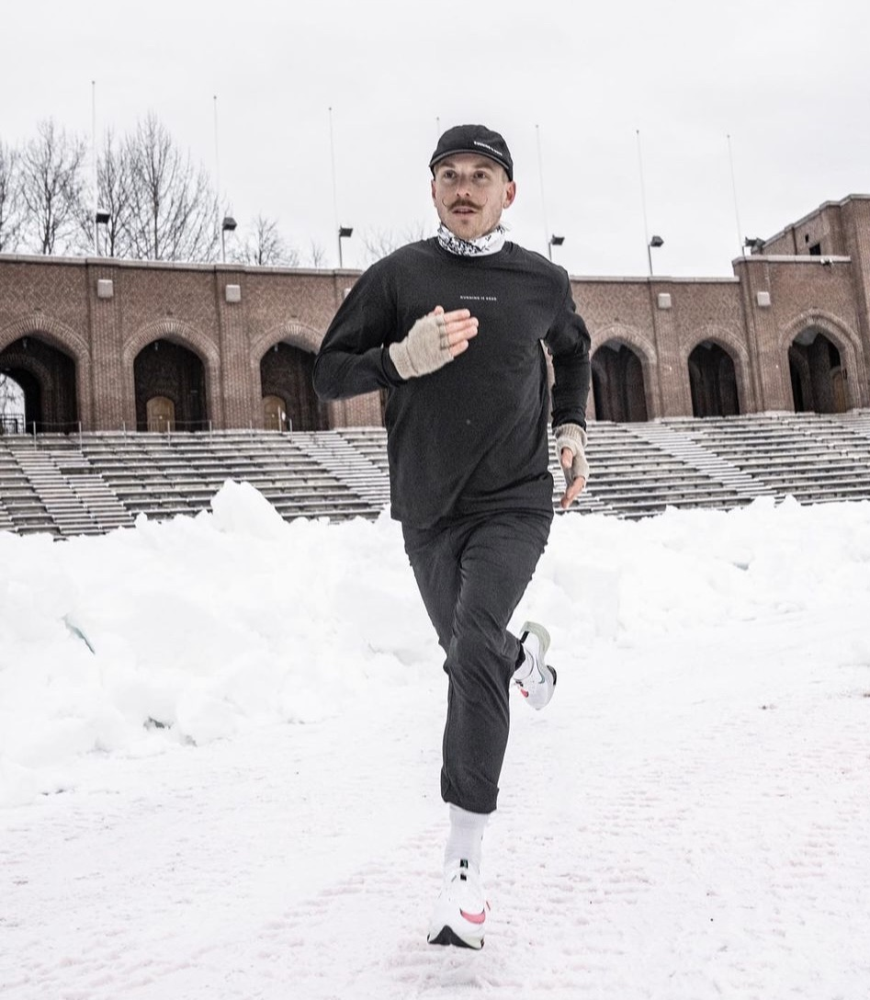
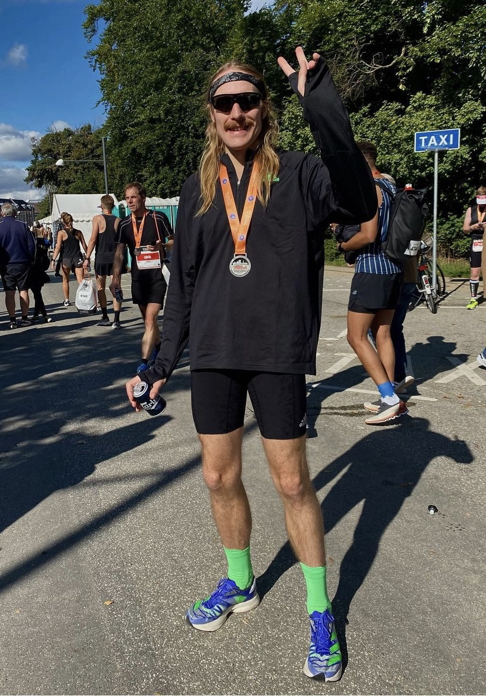
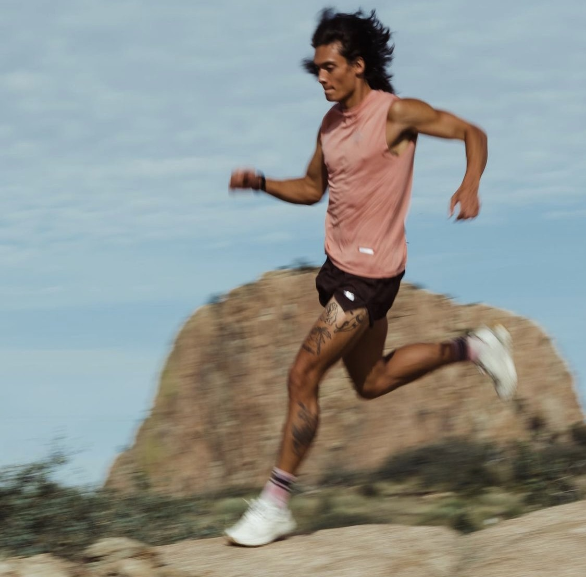
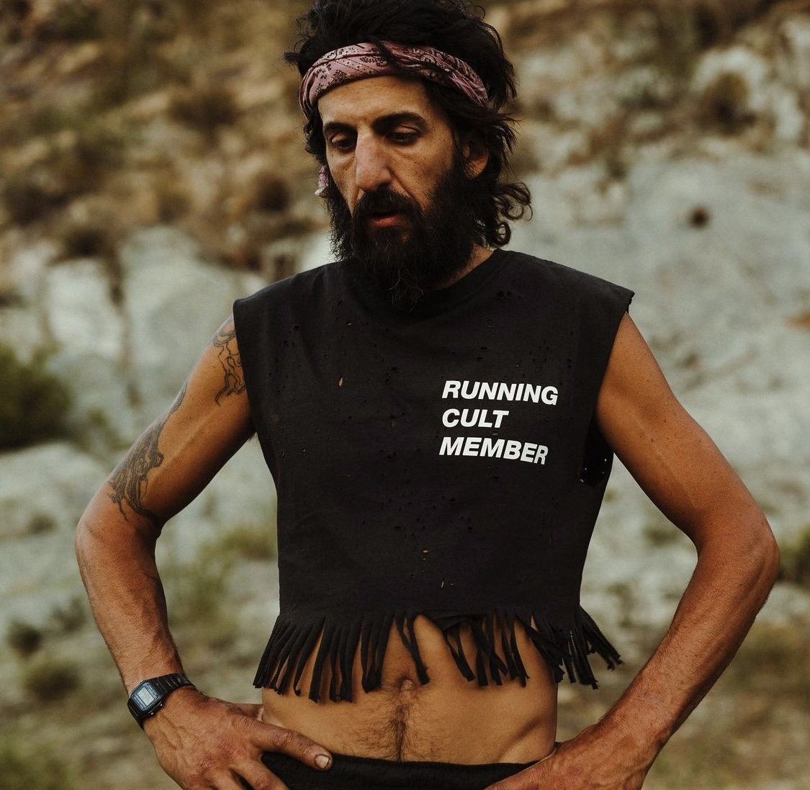
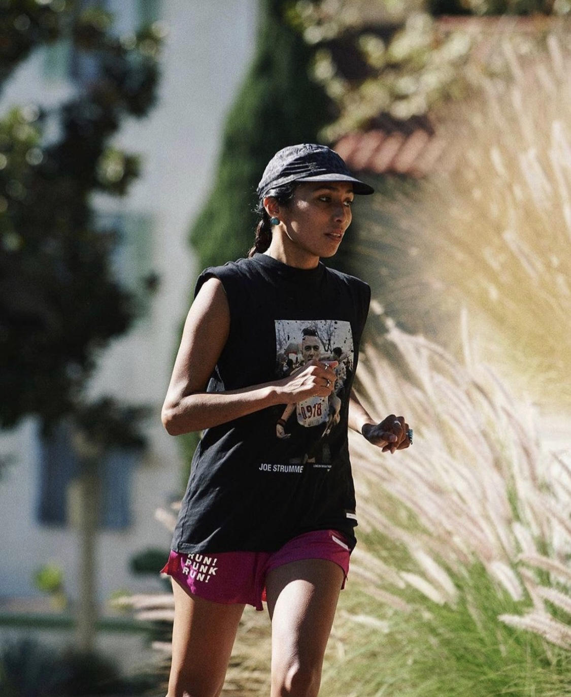
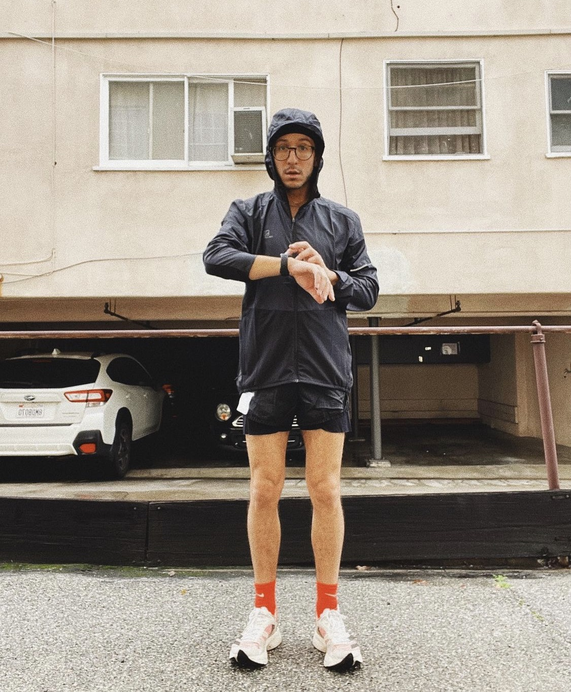

Дивимося на фото бігових модників і розбираємося у фешн-трендах. Викликайте поліцію стилю!
На прохання редакції Ногибоги автори Телеграм-каналу Runway , присвяченого біговій моді, показують фотки стильних бігунів та пояснюють вдалі стилістичні рішення кожного образу.
Головна примітка про цей текст: у ньому лише оціночна думка авторів.
А ще в ньому чимало згадок різних бігових інді-брендів: невеликих компаній, які роблять якісний та красивий екіп. Ви могли раніше про них не знати, тому рекомендуємо походити за посиланнями, які ми тут додали, і зацінити їхні колекції.
На фото вище – наймодніший трейлранер, Патрік Стенгбай . Одразу варто зауважити відсутність яскравих та кислотних кольорів. Всі кольори темні та добре поєднуються один з одним. Якщо бігова жилетка, то чорна. Високі шкарпетки обов’язково. Шорти, термуха та кепка – Satisfy, окуляри District Vision , жилет Salomon S/lab , взуття Norda , шкарпетки Falke.
Бандана поєднується за відтінками з кросівками. Шорти з подовженим лайнером (нижній обтягуючий шар – прим. ред.) – тренд останніх трьох років. Темні, неяскраві кольори. Шкарпетки, щоправда, можна було б і вище надіти.
Ось вам головний фешн інсайт: трейл – це майбутній «новий чорний».
На фото – мінімалістичний монохромний аутлук, а ось зі шкарпетками знову промах – трохи довші би. Кольорові дзеркальні лінзи додають акцент і завершують цей лук. На фото Бен Морроу – засновник інді-марки Miler Running . Шорти та футболка саме від цього бренду, жилет Salomon S/lab , взуття Salomon , окуляри District Vision .
Тут прямо все супер! Кроп-топ – самостійно обрізані футболки – тренд нового сезону. А біг у «бавовні» (бавовняна тканина) – це класика, яка завжди актуальна. Чорні високі шкарпетки? Так, саме чорні і так – саме високі! Розслаблені луки для чілових літніх пробіжок. Метью Мейєр в кепці від . Ciele Athletics
Race-mode і чудовий приклад, як можна круто виглядати у мас-маркеті. Тотал лук від Nike: чорні спринтери, злегка подовжений лонгслів. Монохромний стиль з колірним акцентом на кросівках.
Ну, і звісно ж футуристичні окуляри Оклі Като – лише вони можуть зробити вас наймоднішим на районі.
Зимовий стиль від Віктора Сменгса . Джогери замість тайтсів, високі шкарпетки, бандана на шиї. Все в монохромних кольорах і знову акцент на взуття. Все, крім кросівок, – від Running Is Dead.
Ще один гоночний лук. Монохромні кольори, майка і вільні шорти. Смужки на шкарпетках та «педалях» гармонійно доповнюють одні одних. А ледь помітні колірні акценти на взутті завершують образ.
Майка – Running Is Dead, шорти – Run Amok by Roark, шкарпетки та кросівки – adidas.
Приклад того, як можна за допомогою шкарпеток доповнити яскраві кросівки і виглядати модно і актуально.
Головне правило – яскравий акцент має бути один! Решта нейтральне або краще чорне. Ну, і звичайно ж бандана, особливо з такою розкішною зачіскою. Тотал лук adidas від Петера Лундгрена.
Майка та кросівки добре перегукуються за кольорами. Довжина шкарпеток відповідає стандартам краси. Ну, і куди ж без бандани?
На фото головний по медитативних практиках у біговій інді-спільноті – Хакім Тафарі. Майка та карго-спринтери – Satisfy, шкарпетки – Ten Thousand, кросівки Diadora.
Основний настрій образу створюють пильні відтінки бавовняної футболки та кольору волосся Лі Герсон – капітана команди Satisfy на епічній гонці The Speed Project.
Шорти з подовженим лайнером в анімалістичному забарвленні – гарячий тренд минулих сезонів. Найголовніше, що весь одяг розслабленого крою, ґендерно нейтральний, без вульгарностей. Увесь образ від Satisfy .
Бред Поппл флексить рокерським луком – леопардові шорти та рвана масл-ті (muscle tee – футболка без рукавів). Ще кілька років тому леопард вважався моветоном, але зараз він знову в моді.
Головне не переборщити з яскравими деталями, інакше ризикуєте перетворитися на циганського барона. Ще один тотал лук від Satisfy .
Білі трейлові кросівки – безперечно, тренд останніх років. Відмінне поєднання блідо-рожевої масл-ті та tie-dye принту на шкарпетках. Адам Войдойд показує як вільні та короткі шорти чудово підходять для літніх пробіжок. Тотал лук від Satisfy , кросівки Norda.
По-перше, це Майкл Верстіг – відомий у вузьких колах ультраранер, амбасадор бренду Satisfy. По-друге, він у бавовняному кроп-топі з ідеальною бахромою. Ну і по-третє, він у бандані, яка є колірним акцентом цього образу.
Джогери завжди актуальні, темний колір верху і низу зі світлими кросівками створюють контрастний і об’ємний образ. Тотал лук від Soar, кросівки Karhu.
Скандинавський мінімалізм від шведів з Running Is Dead . Монохромний жіночий лук – просто і зі смаком. Окуляри District Vision.
Вільний фіт, бавовняна футболка, яскраві шорти кольору фуксії – все чудово поєднується з панк біговим стилем. Тотал лук від Satisfy .
Ще один приклад хорошої socks game від Деві Грінберг. Чорний верх і низ, яскраві шкарпетки, що перегукуються з кросівками. Шорти із подовженим лайнером.
Зимовий варіант: нейтральні, приглушені кольори, тайтси, заправлені в шкарпетки потрібної довжини, вільна, ледь подовжена куртка. Цілий образ від 7 Days Active , кросівки Nike.